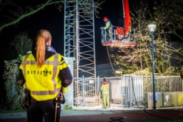

Opnieuw branden in zendmasten, nu in twee in Almere
Opnieuw zijn er branden geweest in zendmasten, vanavond ging het om twee in Almere. Beide branden waren snel onder
controle, aldus een woordvoerder van de Veiligheidsregio. De politie onderzoekt de branden. Of ze zijn aangestoken is
nog niet duidelijk.
De afgelopen dagen waren er meerdere branden bij zendmasten. Zo was er zaterdag in Tilburg een brandje bij een kast
van de zendmast. Ook heeft er afgelopen week in het Brabantse Oudenbosch brand gewoed in twee zendmasten, waarbij het
volgens de politie vermoedelijk om brandstichting ging. Ook bij twee zendmasten in het Brabantse Veldhoven heeft brand
gewoed.

Gevangenen willen helpen tijdens coronacrisis: ‘Wij kunnen iets voor maatschappij betekenen’
Een groep gedetineerden uit de Penitentiaire Inrichting in Zaanstad heeft een brief geschreven aan minister Sander Dekker (Rechtsbescherming) waarin ze aangeven vanuit de gevangenis iets voor de maatschappij te willen betekenen. De brief is ook getekend door enkele bewaarders.
De 48 gedetineerden van afdeling Noord 400 in de gevangenis schrijven de minister dat zij in deze periode, waarin het coronavirus het dagelijks leven beheerst en ‘solidariteit en saamhorigheid de boventoon voeren’, met de rest van de samenleving meevoelen. ‘Wij zijn van mening dat ook wij iets voor de maatschappij kunnen betekenen.’ De gedetineerden doen de minister vier voorstellen waarvan zij denken dat ze betekenisvol zijn.

Studenten mogen drie maanden langer reizen met ov-kaart
Studenten die vanwege het coronavirus niet naar hun universiteit of hogeschool kunnen, mogen drie maanden langer blijven reizen met hun ov-studentenkaart. Dat heeft het ministerie van Onderwijs vandaag bekendgemaakt. De kaart loopt automatisch drie maanden langer door nadat de periode waarin studenten recht hebben op gratis reizen is verstreken. Studenten hebben recht op een ov-studentenkaart gedurende de duur van hun studie plus één jaar extra. De verlenging is deels bedoeld als compensatie, omdat het onderwijs vanwege het coronavirus nu stilligt en studenten vanuit huis werken..